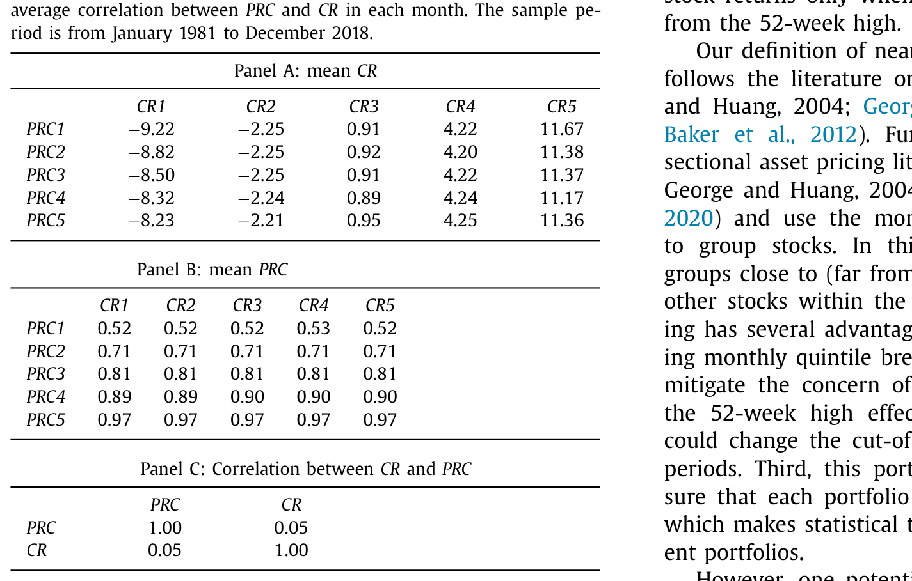
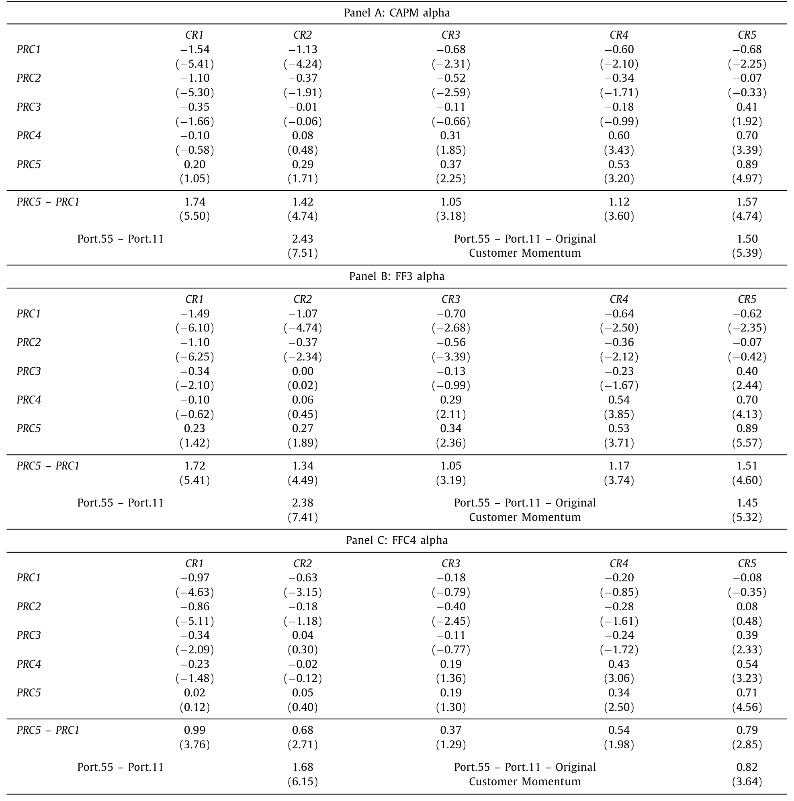
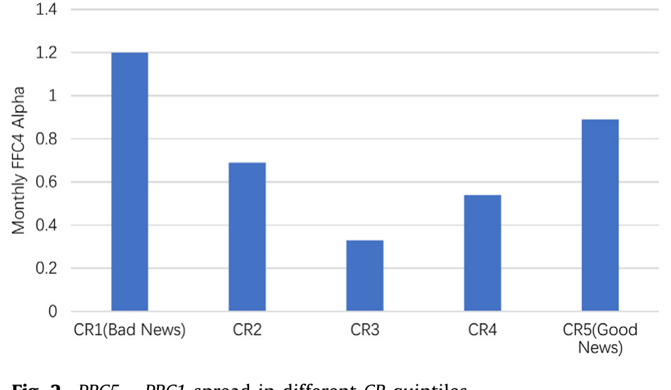
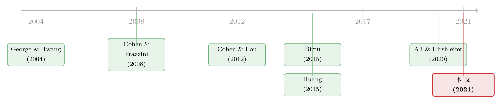

股价撞上「天花板」：52周高点如何拖慢了对客户消息的反应
本文读的是 Huang, Lin & Xiang (2021, Journal of Financial Economics)：供应商股价对客户消息的「慢半拍」反应，很大程度上并非源于投资者没看见消息，而是因为股价离 52 周高点的远近构成了一道心理障碍——好消息撞上了「天花板」就涨不动，坏消息离「地板」太远就跌不下去。一旦把这层 52 周高点效应剥离出来，著名的「客户动量」几乎完全消失。
1 一个被讲了十几年的故事，和它没说完的那一半
先从一个已经被讲过很多遍的现象说起。
2008 年，Cohen 和 Frazzini 写下了一篇后来被反复引用的论文：一家公司的股价，会对它的客户的消息反应迟钝。具体说，如果一家供应商的主要客户上个月股票大涨，那么这家供应商的股价在下个月还会继续往上走——市场没有在客户消息出现的当下就把它定价进去，而是拖到了下个月才慢慢补上。这就是后来被称为「客户动量 (customer momentum)」的跨公司可预测性。
这之后，类似的「经济联系 → 慢反应」被一篇接一篇地挖了出来：地理上的邻居（Parsons et al., 2020）、行业里的同行（Moskowitz and Grinblatt, 1999）、把多个业务拼在一起的复合企业（Cohen and Lou, 2012）、甚至是美国跨国公司在海外的行业（Huang, 2015）。一条共同的线索是：当 A 公司有了价值相关的消息，与它经济上相连的 B 公司股价，要过一阵子才反应过来。 这种「延迟反应」几乎成了市场无效的一个标志性证据。
那么，为什么会慢？
接着，一个自然的问题是——慢的机制到底是什么。过去十几年里，主流的答案几乎只有一个词：投资者注意力不足 (investor inattention)。Cohen 和 Frazzini 当年的解释就是，投资者忙不过来，顾不上去盯着每一家客户的股价，于是公开可得的信息没有被及时纳入价格。后来的研究大多沿用了这个思路：人是有限注意的，信息扩散需要时间，所以价格慢慢调整。
听起来很顺。但 Huang、Lin 和 Xiang 这篇 2021 年的 JFE 论文，偏偏要在这个「顺」的地方按下暂停键，问一句：如果投资者其实看见了消息呢？看见了，却还是没动——那又是为什么？
这就是这篇文章真正想讲的那一件事。
2 真正关键的一步：把「52 周高点」请进来
作者给出的答案，来自一个看上去和「客户动量」毫不相干的行为金融变量——离 52 周高点的远近 (nearness to the 52-week high)，文中简记为 PRC。
它的定义朴素得近乎简单：用当月月末的收盘价，除以过去 12 个月里的最高日收盘价。
$$ PRC_{i,t} = \frac{P_{i,t}}{\max_{\tau \in [t-12,\,t]} P_{i,\tau}} $$
PRC 越接近 1，说明这只股票现在的价格离它过去一年的最高点越近；PRC 越小，说明它离那个高点越远。价格（经拆股和股息调整）来自 CRSP，客户消息则用供应商各家客户当月的等权收益 (customer returns，简记 CR) 来度量。
这个变量本身并不新。George 和 Hwang 早在 2004 年就发现，离 52 周高点越近的股票，未来收益越高——这就是著名的「52 周高点动量」。他们的解释是锚定 (anchoring)：投资者把 52 周高点当成了一个心理上的参照点。Birru (2015) 进一步指出，这个高点其实是一道心理障碍 (psychological barrier)，会让投资者对公司自己的盈余消息反应不足。
但真正关键的一步在于：作者把这道「心理障碍」从「对公司自己的消息」搬到了「对经济关联公司的消息」上，并由此提出了全文的核心假设——
当一家公司的经济关联方出现好（坏）消息，而它自己的股价正好离 52 周高点很近（很远）时，它对这条好（坏）消息的反应会特别不足。
直觉是这样的：对于一只价格已经贴着 52 周高点的股票，在锚定投资者眼里，向上的空间被那个高点「封住」了。于是当客户传来好消息时，他们不敢把信念往上调太多——价格涨不动，好消息的反应被压住了，只能在随后的日子里慢慢释放。反过来，对于一只价格离高点很远（也就是贴着「地板」）的股票，投资者对坏消息同样反应迟钝——往下也像是被一道无形的底托住了。
换句话说：客户动量也许根本不是一个独立的现象，它可能只是 52 周高点这道心理障碍在「经济联系」这个场景下的投影。
这就是全文要反复讲透的那「一个核心」。下面所有的实证，都是在为这一句话做证。
3 识别策略：用两把几乎不相关的尺子做双排序
要检验上面那句话，作者用的是资产定价里最经典、也最透明的工具——双排序 (double sort)。
每个月，把所有供应商公司独立地按两个变量各分成五档：一是上个月的客户收益 CR（从 CR1 最低到 CR5 最高），二是上月末离 52 周高点的远近 PRC（从 PRC1 最远到 PRC5 最近）。两两交叉，得到 25 个组合，持有一个月，计算等权收益。
这里有一个识别上的关键前提：两把尺子不能本质上是同一把。如果 CR 和 PRC 高度相关，那双排序就成了「用一个变量去排另一个变量自己」，什么都说明不了。作者花了 Table 1 专门来打消这个顾虑：在每个 CR 档内，平均 PRC 几乎不随 CR 变化；在每个 PRC 档内，平均 CR 也几乎不动；最关键的是，两者的横截面相关系数只有 0.05。

Table 1
这个 0.05 很重要——它意味着接下来看到的任何「PRC 改变了 CR 的预测力」的结果，都不太可能是两个变量机械重叠造出来的假象。（把「经济联系」和价格反应拆开看的思路，也可参见《评级一起动，股价却慢半拍——藏在债券市场里的「经济联系」》与《强邻、弱邻，和你站的位置：被「折叠」起来的同行效应》。）
样本方面：供应商来自 NYSE、Amex 和 Nasdaq，区间为 1981 年 1 月至 2018 年 12 月；客户—供应商关系沿用 Cohen and Frazzini (2008) 的做法，从 Compustat 客户分部文件里抽取公司的主要客户（占其销售额 10% 以上者须披露），再与 CRSP 里的上市公司手工匹配，平均每年覆盖 997 家供应商。作者还加了两道防线：客户—供应商关系建立后留出6 个月的时滞以确保信息已公开，以及剔除组合形成日股价低于 $5 的「仙股」以避免流动性噪音。
4 主要结果：好消息撞上天花板，就涨不动了
现在看 Table 2 里那张让人眼前一亮的表（我们聚焦其中的 Fama-French-Carhart 四因子 alpha，下称 FFC4 alpha）。

Table 2
先看好消息的那一端，也就是客户大涨的 CR5 这一行。如果这只供应商股票同时离 52 周高点很近（CR5~PRC5），它下个月的 FFC4 alpha 是 0.71%/月（t = 4.56），显著为正——好消息确实带来了后续的上涨。但如果它离高点很远（CR5~PRC1），FFC4 alpha 只有 -0.08%（t = -0.32），完全不显著。两者之差在统计上显著（t = 2.85）。
也就是说：同样是客户的好消息，只有当供应商股价贴着 52 周高点时，才会带来后续的「慢涨」；离高点远的，几乎没有可预测的漂移。
再看坏消息那一端，客户大跌的 CR1 这一行，结论对称得近乎漂亮。离高点很远的 CR1~PRC1 组合，FFC4 alpha 是 -0.97%/月（t = -4.63）——坏消息后股价继续阴跌；而离高点很近的 CR1~PRC5 组合，FFC4 alpha 只有 0.02%（t = 0.12），毫无下跌的可预测性。两者之差同样显著（t = 3.76）。
把这两端拼起来，一幅清晰的图景就出来了：客户动量并不是均匀地存在于所有股票上，它高度集中在「好消息 + 贴着天花板」和「坏消息 + 贴着地板」这两个角落里。
而且作者特意指出一个细节：在中间的客户收益档（CR2–CR4）里，PRC5 与 PRC1 的收益差很小、不显著；只有在最高和最低的客户收益档里，这个 52 周高点收益差才变得很大。把它画出来，就是一条漂亮的 U 形曲线。

Figure 2: PRC5 –PRC1 spread in different CR quintiles
这条 U 形其实是个很妙的「反证」：如果 PRC5−PRC1 的收益差只是 52 周高点动量本身（George and Hwang, 2004）在作祟，那它在每个 CR 档里都应该差不多大，不该是 U 形。U 形说明，52 周高点的作用恰恰要和客户消息相互作用才会被放大——这正是「交互效应」的痕迹。
5 反转：把客户动量「分解」掉之后，它几乎归零
到这里，怀疑论者会说：你这只是双排序的描述性结果，凭什么说客户动量就是被 52 周高点「解释」掉的？
于是真正的反转出现在收益分解 (return decomposition) 这一步。作者沿用 George et al. (2017) 的 Fama-MacBeth 横截面回归，把双排序组合的收益拆成三块：纯粹的客户动量效应、纯粹的 52 周高点效应，以及两者之间的交互效应 (interaction effect)。这个交互项，衡量的正是「客户动量中有多少是被 52 周高点效应诱发出来的」。
结果相当干脆：
- 交互效应的
FFC4 alpha高达1.44%/月（t =2.72），显著为正； - 一旦把交互效应放进去，纯粹的客户动量就塌了——
FFC4 alpha只剩0.06%（t =0.21），不再显著； - 而如果不考虑交互效应，客户动量单独看是显著的：
FFC4 alpha=0.54%（t =4.63）。
这组对照几乎就是这篇论文的「证据皇冠」：客户动量在被孤立看待时活蹦乱跳（0.54%，t = 4.63），可一旦把它和 52 周高点的交互项放在一起，它就「让位」给了交互效应，自己缩成了一个统计上的零。
作者还做了一个很聪明的安慰剂检验 (placebo test)：会不会 PRC 只是供应商过去 12 个月收益的代理，真正起作用的是过去 12 个月收益？于是他们把 PRC 换成过去 12 个月收益重做分解——结果交互效应消失了，而纯客户动量依然显著。这反过来凸显了：起作用的就是「离 52 周高点的远近」这个特定的心理锚，而不是泛泛的过往收益。
6 真的不是「没看见」吗？——直接给注意力假说做体检
讲到这里，最较真的读者一定会追问：你怎么知道这不还是「投资者注意力不足」？毕竟离 52 周高点近或远的股票，可能本来就更受关注、或更不受关注。
这恰恰是这篇文章最让我欣赏的地方——它没有回避，而是正面把注意力假说拉出来检验，并且分两条线。
第一条线，量注意力本身。 作者用了两个注意力代理：异常交易量（Huddart et al., 2009）和 Bloomberg 的搜索强度（Ben-Rephael et al., 2017）。如果反应不足是因为「没人看」，那贴着高点/地板的股票应该注意力更低才对。结果恰恰相反：当股价离 52 周高点很近或很远时，投资者注意力是上升而非下降的。 这就把「没看见」这个解释直接堵死了——人们明明在看，却还是没把消息定价进去。
第二条线，看专业人士——分析师。 这是全文在「机制」上做得最扎实的一块。作者用 I/B/E/S 的分析师推荐数据（1993 年 11 月至 2018 年 12 月），把推荐评级反向编码成 1（最差）到 5（最好），看分析师的升级/降级如何随客户收益变化。结论是：分析师确实会对客户消息做反应——客户收益高（低）时，他们更可能上调（下调）供应商评级；但当供应商股价贴着 52 周高点（或地板）时，这种敏感度被显著削弱了。
这一步的意义在于：分析师是「决策可被直接观测」的一群人，他们显然有注意力、也有专业能力去盯客户股价。可他们的信念更新过程照样被 52 周高点扭曲了。这就为「心理障碍扭曲信念更新」这个机制，提供了一个比单看股价收益更直接的证据。（关于股东/机构结构如何拖慢信息扩散，可对照《被「同一批股东」拖慢的消息：当机构持股反而让信息扩散得更慢》。）
7 稳健性、套利限制与外推
剩下的工作，是把这个核心结论的「四面墙」都砌牢。
套利限制 (limits to arbitrage)。 交互效应在小市值、低机构持股、低分析师覆盖、高特质波动率的供应商里更强。这符合「市场无效需要有摩擦才能存活」的逻辑——越是套利者够不着的角落，这道心理障碍造成的错误定价越大。
稳健性。 结论对换用 Daniel et al. (1997) 的特征调整收益、改用 Fama and French (2015) 五因子或 Hou et al. (2015) 的 Q 因子、剔除 1 月份都成立。针对「月度五分位排名未必等于真的离高点近/远」这个顾虑，作者还用了绝对距离（如离高低点 5% 范围）和时间不变的全样本分位切点来分组，结论一致；并且在高（低）市场收益之后的月份里，对客户好（坏）消息的反应不足更强——因为那时位于顶部（底部）PRC 档的股票，确实离它们真实的 52 周高点更近（更远）。
外推到其他场景。 最后，作者把同一把尺子搬到地理动量（Parsons et al., 2020）、行业动量（Moskowitz and Grinblatt, 1999）、复合企业（Cohen and Lou, 2012）和海外行业信息（Huang, 2015）四个场景，发现 52 周高点效应都能至少部分解释那里的跨公司可预测性。更进一步，当供应商和客户双方的股价都贴着各自的 52 周高点时，对客户好（坏）消息的反应不足更强——这是因为锚定同时作用在了信息的「发送端」和「接收端」。
8 文献脉络
把这条线索捋直了看，它其实是两条河流的交汇。
一条河，是跨公司可预测性这一脉。源头是 Cohen and Frazzini (2008) 的客户动量，随后 Cohen and Lou (2012) 把它推广到复合企业、Huang (2015) 推广到海外行业、Parsons et al. (2020) 推广到地理邻居。这一脉给出的机制几乎清一色是「投资者注意力不足」。直到 Ali and Hirshleifer (2020) 用「共享分析师覆盖」给各种经济联系找了一个统一的度量——但他们统一的是「联系本身」，而不是「为什么反应慢」。
另一条河，是52 周高点与锚定这一脉。George and Hwang (2004) 发现 52 周高点能预测收益，Birru (2015) 把它解释成一道导致对公司自身盈余消息反应不足的心理障碍。

这篇论文的位置，恰好是这两条河的汇流处：它没有再为「联系」找新度量，而是为「反应慢」给出了一个统一的、新的心理学解释——把 Birru (2015) 那道针对「自己消息」的心理障碍，扩展成了针对「关联方消息」的心理障碍，从而一举把客户动量、地理动量、行业动量、海外行业动量都收进了同一个框架。它和 Birru (2015)、George et al. (2017) 最大的区别就在这里：后两者管的是「对自己盈余的反应不足」，而这篇管的是「对经济关联方消息的反应不足」。
9 评论与延伸（Q&A + 研究方向）
(a) 几个可能的疑问
Q：52 周高点效应和投资者注意力不足，到底是替代关系还是互补关系？
作者并没有完全否定注意力假说，而是说它不是全部。两条证据划清了界限：一是注意力代理（异常成交量、Bloomberg 搜索）在贴近/远离高点时反而上升；二是连有注意力、有专业能力的分析师，信念更新也被扭曲。所以更准确的说法是：心理障碍是一个独立于注意力的渠道，二者可以并存，但客户动量的可预测性主要被前者吃掉了。
Q：相关系数只有 0.05 就足以说明两把尺子独立吗？
这是双排序最该被盘问的地方。
0.05的低相关确实大大缓解了「PRC排序其实是变相的CR排序」的担忧，Table 1 里「每档内另一变量几乎不变」也是佐证。但低相关不等于完全正交，真正补上这一刀的是收益分解和安慰剂检验——把PRC换成过去 12 个月收益，交互效应就消失，说明起作用的确实是「离高点的远近」这个特定的锚，而非泛泛的动量。
Q：U 形关系为什么是关键证据，而不只是个好看的图？
因为它能把「52 周高点效应本身」和「52 周高点 × 客户消息的交互」区分开。若收益差纯由前者驱动，它在每个客户收益档里都该一样大；可它偏偏只在最高/最低客户收益档里放大、中间档里塌缩成 U 形——这只能用「需要客户消息来触发」的交互机制解释。
Q：1.44% 的月度交互 alpha 是不是大得不真实？
这是 Fama-MacBeth 分解出来的纯交互项系数，刻画的是「被 52 周高点诱发的那部分客户动量」，并非一个可直接落地的多空组合收益，所以不宜与净策略收益直接类比。而且它集中在小盘、低机构持股、低覆盖、高特质波动的股票里——这正是套利限制最强、错误定价最难被抹平的角落，量级偏大反而与机制自洽。
Q：把同一套逻辑套到地理、行业、海外四个场景，会不会有过度拟合的嫌疑？
这些场景的客户/邻居/同行度量、样本区间各不相同，能在彼此独立的数据结构上重复出同方向的结果，本身就是对「这是一条普适心理机制」而非「某个特定样本里的巧合」的支持。当然，四个场景的统计强度并不一致，作者也只声称「至少部分解释」，措辞是克制的。
Q：这对「市场是否有效」的争论意味着什么？
它把矛头从「信息有没有被看见」转向了「信息被看见之后有没有被正确纳入信念」。即便信息完全公开、且被注意到，只要存在 52 周高点这样的心理锚，价格依然会系统性地慢半拍。这等于说，市场无效未必来自信息摩擦，也可以来自纯粹的信念更新偏差——而后者更难靠「提高信息可得性」来消除。
(b) 几个可能的研究问题与提案
1. 把这道心理障碍搬到公司债市场。
【经济故事】52 周高点是股票价格的锚，但债券有一个更自然的锚——票面价值（par，即 100）。一只债券的成交价离 100 的远近，会不会同样扭曲投资者对发行人关联方（如其主要客户、同评级同行）消息的反应？「面值天花板」对好消息的压制，机制上和股票的 52 周高点高度类似。
【可行性】中。数据上需要 TRACE 的债券成交价、Mergent FISD 的债券特征，再配合 Compustat 客户—供应商关系，识别策略可直接平移本文的双排序 + 分解。难点在于债券成交稀疏、价格噪音大，且票面锚与久期、信用利差纠缠，需要小心剥离。
2. 外资持有人会不会「带来」不一样的锚？
【经济故事】不同国家投资者参照的高点未必相同（本币计价 vs. 美元计价的 52 周高点）。如果一只 ADR 或跨境上市股票的外资持有比例高，其对关联方消息的反应不足，会不会随「以哪种货币衡量的 52 周高点」而变？这能把锚定的「主观参照点」假说推到一个有跨境异质性的干净检验上。
【可行性】中偏低。需要 FactSet/13F 类的持有人国别数据加双重上市样本，识别上要处理货币与高点的内生纠缠，doable 但数据拼接成本高。
3. 锚定与流动性提供者的报价行为。 【经济故事】如果连分析师的信念都被 52 周高点扭曲，那做市商/流动性提供者在关联方消息到来时的报价是否也被锚住？当标的贴着 52 周高点时，做市商对好消息的报价调整是否更迟钝，从而在那一刻人为压低了价格发现速度？ 【可行性】高。用高频报价/成交数据加事件时点（客户的盈余公告日）即可做事件研究，识别清晰、数据现成，是相对容易落地的一个方向。
4. 心理障碍的「跨资产传染」。
【经济故事】本文已发现供应商和客户双方都贴高点时反应不足更强。能否进一步问：当一条供应链上多家公司同时贴着各自的 52 周高点，是否会形成一种「集体性的慢反应」，把单家公司的错误定价沿网络放大？这与生产网络的信息传导直接相关（参见《互补品的暗线：当电池涨价，芯片厂的股票为什么会先动？》）。
【可行性】中。需要构建供应链网络 + 各节点的 PRC，识别上要区分「网络传导」与「共同冲击」，挑战在于网络层面的标准误与因果识别。
10 我的判断
先说贡献。这篇文章最漂亮的地方，是它没有再添一个新的「联系」，而是给一整类「慢反应」找到了一个统一的心理开关。当 0.54%（t = 4.63）的客户动量在放进交互项后塌成 0.06%（t = 0.21），那种「一招制敌」的干净，是实证资产定价里不多见的。更难得的是，它没有满足于股票收益的相关性，而是真的走到分析师推荐这一层，去看「会不会其实是没注意到」——并用注意力上升、分析师敏感度下降两条证据把替代解释逐一关掉。这种「正面迎战竞争假说」的姿态，值得学习。
再说我对识别的担忧。其一，PRC 终究是一个非实验的、内生于价格路径的变量：贴着 52 周高点的股票，往往也是近期赢家、基本面更好、信息环境更优，这些都可能与未来收益相关。作者用安慰剂（换成 12 个月收益）和五/六因子调整做了努力，但「锚定」作为机制始终是间接推断出来的，而非直接观测到的心理过程——我们看到的是「行为与锚定假说一致」，而不是「投资者确实在锚定」。其二，收益分解依赖 George et al. (2017) 的特定设定，交互项的大小对回归形式可能敏感，1.44% 这个数字我不会太当真，真正稳的是它的符号和显著性。其三，跨四个场景的外推虽好看，但各场景的强度并不齐整，「部分解释」里的「部分」到底有多大，文中给得不够细。
最后说我想看到的后续。我最想看的是一个能把「锚定」直接钉死的设定——比如用投资者层面的交易数据（而不是聚合收益）去看：那些把 52 周高点当锚的投资者，是不是正是在好消息 + 贴高点时按兵不动的那批人？如果能在个体交易层面把「谁在锚定、何时锚定」对上号，这套机制就从「与证据一致」升级成「被直接看见」。其次，我很期待有人把它搬进信用市场和外资持有人的语境（见上文提案 1、2）——票面价值这个天然的锚，几乎是为这套理论量身定做的下一块试验田。
参考文献
- Ali, U., & Hirshleifer, D. (2020). Shared analyst coverage: Unifying momentum spillover effects. Journal of Financial Economics 136, 649–675.
- Ben-Rephael, A., Da, Z., & Israelsen, R. D. (2017). It depends on where you search: Institutional investor attention and underreaction to news. Review of Financial Studies 30, 3009–3047.
- Birru, J. (2015). Psychological Barriers, Expectational Errors, and Underreaction to News. Ohio State University, unpublished working paper.
- Carhart, M. M. (1997). On persistence in mutual fund performance. Journal of Finance 52, 57–82.
- Cohen, L., & Frazzini, A. (2008). Economic links and predictable returns. Journal of Finance 63, 1977–2011.
- Cohen, L., & Lou, D. (2012). Complicated firms. Journal of Financial Economics 104, 383–400.
- Daniel, K., Grinblatt, M., Titman, S., & Wermers, R. (1997). Measuring mutual fund performance with characteristic-based benchmarks. Journal of Finance 52, 1035–1058.
- Fama, E. F., & French, K. R. (2015). A five-factor asset pricing model. Journal of Financial Economics 116, 1–22.
- George, T. J., & Hwang, C. Y. (2004). The 52-week high and momentum investing. Journal of Finance 59, 2145–2176.
- Hou, K., Xue, C., & Zhang, L. (2015). Digesting anomalies: An investment approach. Review of Financial Studies 28, 650–705.
- Huang, X. (2015). Thinking outside the borders: Investors' underreaction to foreign operations information. Review of Financial Studies 28, 3109–3152.
- Huddart, S., Lang, M., & Yetman, M. H. (2009). Volume and price patterns around a stock's 52-week highs and lows: Theory and evidence. Management Science 55, 16–31.
- Moskowitz, T. J., & Grinblatt, M. (1999). Do industries explain momentum? Journal of Finance 54, 1249–1290.
- Parsons, C. A., Sabbatucci, R., & Titman, S. (2020). Geographic lead-lag effects. Review of Financial Studies 33, 4721–4770.